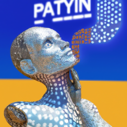

The future of Python and AI
As the tech industry continues to evolve, there is no doubt that artificial intelligence (AI) and machine learning will be at the forefront of the future. Python is quickly becoming the go-to programming language for many tech giants and developers, due to its simplicity and power. With AI, Python is able to process vast amounts of data quickly and accurately, allowing developers to create powerful, intelligent applications. There are many applications for AI and machine learning, from healthcare to finance and beyond. As Python grows in popularity, its applications in the AI realm will continue to increase. With the help of AI, Python can be used to create intelligent applications that are able to learn, grow, and evolve. This could have a huge impact on the tech world and revolutionize the way we use technology. Python is already beginning to make waves in the AI and machine learning fields, and it’s exciting to think of what the future holds.